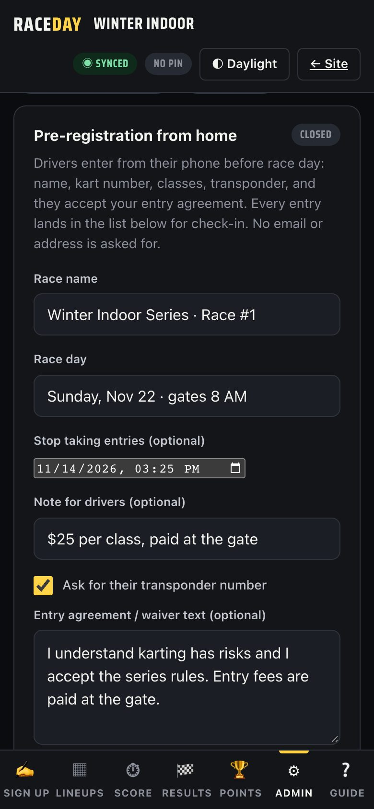
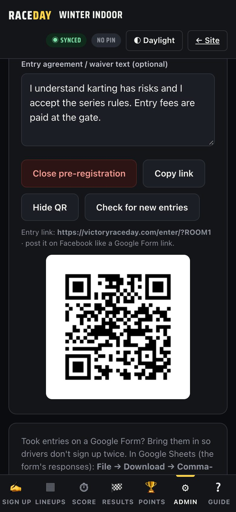
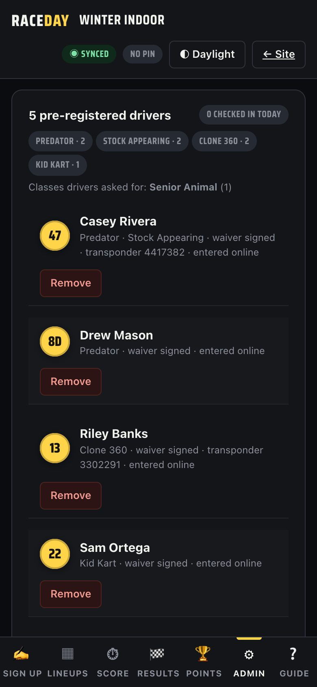
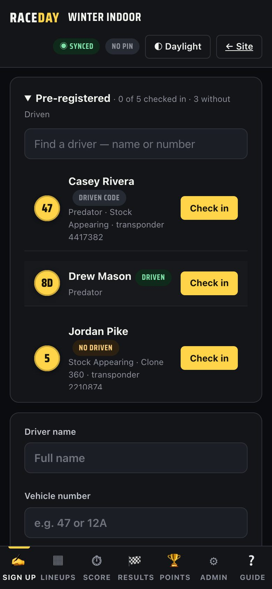
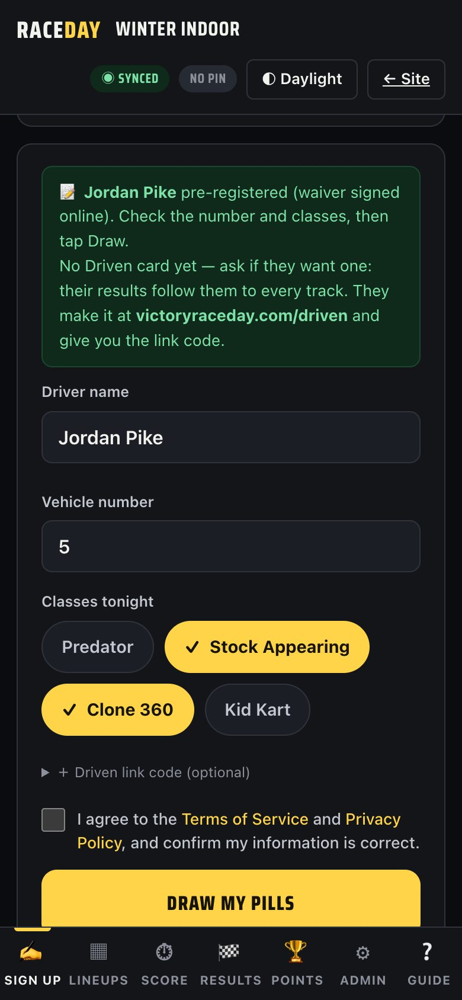

-
Turn on Multi-device sync
Entries reach you through your track's live sync. If it isn't on yet, turn it on in Admin → Sync first (see Multiple devices). You do this once.
-
Fill in the race
Go to Admin → Pre-registrations. Under Pre-registration from home, type the Race name and Race day. Set Stop taking entries if you want entries to close on their own, add a Note for drivers (like your entry fee), and paste your waiver or series rules. Tick Ask for their transponder number if you use timing.

Race details -
Open it and share the link
Tap Open pre-registration. Then tap Copy link and post it on Facebook or in your drivers' group chat, the same way you'd post a Google Form. Show QR gives you a code to print or put on a sign.

Link and QR code -
Watch the entries come in
New entries show up on their own. The list shows how many drivers are in each class and any classes drivers asked you to add. Tap Check for new entries to look right now, Remove to take someone off, or Download entry list (CSV) for a spreadsheet.

Entries and class counts -
Close entries
Entries close by themselves at your Stop taking entries time. To close early, tap Close pre-registration. Anyone who opens the link after that is told to sign up at the gate.
-
Race day: find the driver
On Sign up, the Pre-registered list shows everyone who entered and how many are checked in. Type a name or number to find someone fast. Each driver is tagged Driven, Driven code or No Driven, so you know who to offer a Driven card.

Pre-registered list -
Check in and draw
Tap Check in. Their name, number and classes fill in, and their Driven code if they gave one. Check it with the driver, then tap Draw my pills. They move to the bottom of the list as checked in.

Check in fills the form -
When something goes wrong
- A driver entered twice? Only their newest entry counts. No duplicates.
- Wrong class or number? Fix it on the sign-up form before you tap Draw.
- Link says pre-registration hasn't opened? Tap Open pre-registration and make sure sync is on.
- Walk-ups sign up the normal way. Nothing changes for them.
Good to know
- The entry page never asks for email, phone or address.
- Only your staff devices can see the entry list. The public link can only send entries.
- Already took entries on a Google Form? Import the responses on the same page and they join the same list.
Next guides
Still stuck? The Field Manual walks through every screen, and the FAQ covers common questions. Or just text me — it's the fastest way to get an answer.
💬 Text Josh · (260) 207-4983 →or email